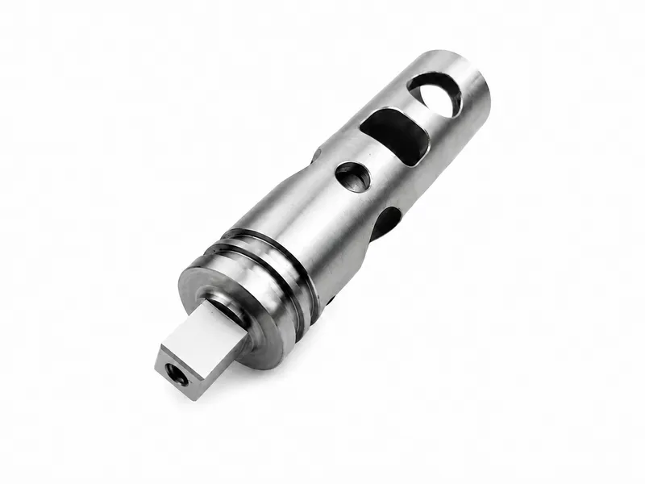
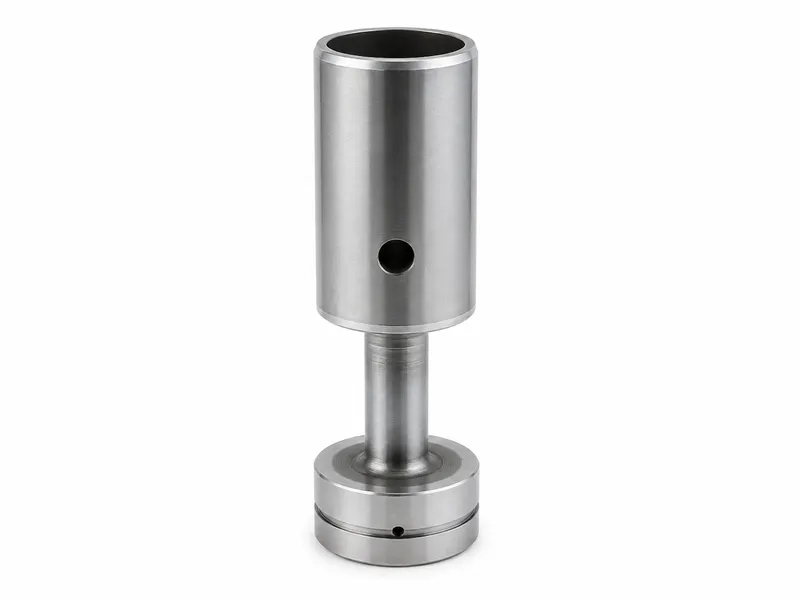
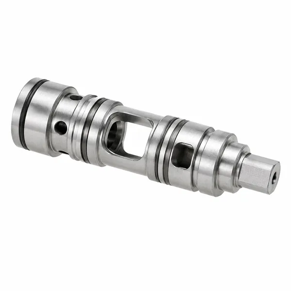
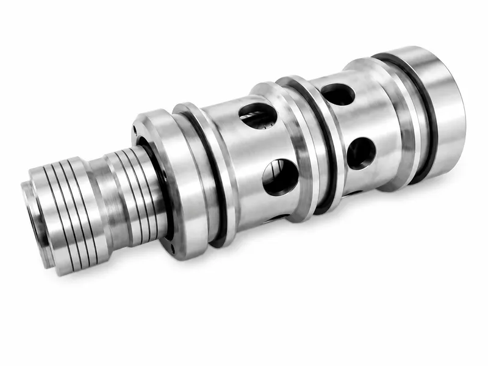

Precision Valve and Cylinder Components





Valve spools and hydraulic pistons are drawing-specific cylindrical components with different functions. A valve spool works with a matched valve bore or sleeve as part of a completed valve assembly, while a hydraulic piston separates cylinder chambers and transfers hydraulic force through the piston rod and cylinder structure.
A valve spool moves inside a matched valve bore or sleeve and may include lands, annular grooves, metering slots, radial holes, axial holes or end drive geometry according to the valve structure. The spool body alone provides movement and metering geometry; directional, pressure, flow and response performance depend on the complete valve assembly and hydraulic circuit. A hydraulic piston works with the cylinder bore, rod, seal system and end structure; the piston alone cannot determine complete cylinder pressure, thrust, leakage, friction or durability.
| Product Type | Drawing-specific valve spools, hydraulic pistons, sleeves, bushings, plungers and shaft-type components |
|---|---|
| Materials | Alloy steel, carbon steel and stainless steel according to component function and drawing requirements; aluminum alloy, copper alloy or other materials subject to wear, strength, corrosion, mass, compatibility and application review |
| Manufacturing Process | CNC turning, groove and land machining, milling or radial/axial drilling where specified, followed by drawing-specified grinding, polishing, lapping, heat treatment, coating, deburring and final inspection as applicable to the individual component |
| Mating Requirement | Critical diameters, clearances, geometry and surface condition are confirmed with the exact valve bore, sleeve, cylinder bore, seal system or mating component |
| Assembly Performance | Flow, directional response, pressure regulation, internal leakage, hysteresis and operating force depend on the complete valve assembly and cannot be established from the spool alone |
| Cylinder Performance | Cylinder pressure, thrust, leakage, friction, cushioning and durability depend on the piston, seals, bore, rod, tube, end closures and complete cylinder design |
| Surface / Heat Treatment | Drawing-specified grinding, polishing, hardening, nitriding, hard chrome, black oxide, passivation or another compatible wear or corrosion treatment, subject to material, mating clearance and component function |
| Tolerance Requirement | Land diameters, grooves, metering features, radial or axial holes, seal grooves, outside diameters, shoulders and end features are controlled according to the drawing, mating parts, component function and agreed inspection plan |
| Component Type | Main Function | Design Focus | Typical Confirmation Items |
|---|---|---|---|
| Valve Spool | Moves within a matched valve bore or sleeve and changes flow-path relationships as part of a completed valve assembly | Land diameters, grooves, metering edges, radial or axial features, end geometry and mating clearance according to the valve design | Mating bore or sleeve, edge condition, material, fluid, leakage and inspection plan |
| Hydraulic Cylinder Piston | Separates cylinder pressure chambers and transfers hydraulic force to the rod and cylinder structure | Piston seal grooves, wear-ring or guide-ring grooves, outside-diameter relationship, rod connection and complete cylinder design | Cylinder bore, rod, seals, groove details, material and assembly validation scope |
| Valve Sleeve / Bushing | Provides a matched internal bore, port windows, guidance or replaceable wear interface for a spool or moving element | Inside and outside diameter relationship, port-window location, retention, orientation and fit with both body and spool | Body fit, spool fit, port alignment, orientation and retention method |
| Custom Shaft / Plunger | Transfers motion, positioning force or actuation according to the drawing | Shoulders, threads, end features, straightness, fits and mating mechanism | Fits, straightness, runout, thread and end-connection requirements |
Valve spools, hydraulic pistons, sleeves and plungers are reviewed as different parts rather than one common sealing product.
Lands, grooves, metering slots, holes and end features are included only when specified by the valve or cylinder drawing.
The applicable fit, leakage, metering, sealing, wear and load requirements depend on the specific component, mating parts and completed valve or cylinder assembly.
Metering edges, chamfers, radii and burr limits are confirmed from the drawing before machining and deburring.
Diameter, roundness, cylindricity, straightness, runout, groove, hole, roughness, edge, hardness or coating checks are applied where specified.
Directional valve assemblies, pressure or flow-control valve assemblies, and drawing-specific mobile and industrial valve systems.
Construction machinery cylinders, agricultural equipment cylinders, lifting and industrial actuator cylinders, and OEM replacement or custom cylinder projects.
Drawing-specific valve and actuator assemblies requiring a matched bore, port window or wear interface.
Motion, positioning or actuation components manufactured according to the approved drawing and mating mechanism.
Spool land and groove positions relative to valve body ports determine the open and closed relationships in the completed valve assembly. Metering-edge condition, edge break, chamfer and radius requirements must be defined by the valve drawing. Deburring must remove harmful burrs without unintentionally changing the specified flow-control geometry.
No single clearance, diameter tolerance, roughness or hardness requirement applies to every spool, sleeve or piston design. Spool diameter cannot be determined independently from the bore or sleeve; clearance is affected by material, temperature, fluid viscosity, pressure difference, contamination, leakage requirement and thermal expansion. Piston outside diameter and grooves must match the cylinder bore and seal system.
Single-component inspection confirms the specified geometry and surface condition of the part. Valve or cylinder performance must be validated on the applicable completed assembly when required.
Valve spool material and condition are confirmed according to wear interface, required hardness, mating bore, hydraulic fluid and valve design. Hydraulic piston material is confirmed according to pressure loading, rod connection, seal system, cylinder bore, mass and complete cylinder design. Material certificates are provided only when specified in the order.
These processes are not default for every part. Coating permission on precision sliding lands, metering edges and fitted outside diameters must be confirmed by drawing because coating buildup changes clearance. Zinc-based coatings may be considered for suitable non-functional or drawing-approved surfaces and must not be assumed suitable for precision sliding or metering lands. Hard chrome applies only to drawing-specified wear or sliding surfaces; nitriding, carburizing, hardening or other heat treatment follows material and drawing requirements. Stainless steel passivation does not improve wear resistance for every sliding surface.
Confirm drawings, mating parts, material, heat treatment, clearance, surface condition, coating limitations and inspection scope before quotation. Matched-set or selective-fit inspection is performed only when mating components, grouping rules and acceptance criteria are included in the order scope.
CNC turning is used for base cylinders, shoulders, end features and grooves. Milling, radial holes or axial holes are used only when those features exist on the drawing. Outside grinding, inside grinding, honing, lapping, polishing or fine finishing is described only when the drawing specifies it and the actual project scope allows it. Welding is not a routine process for valve spools or hydraulic pistons.
Review valve bore, sleeve, cylinder bore, seal, rod and assembly information before confirming critical dimensions.
Machine shoulders, lands, annular grooves, seal grooves and end features according to drawing-defined geometry.
Deburr ports, groove edges, intersections and ends without damaging sliding surfaces or metering edges.
Confirm grinding, polishing, coating, hard chrome, nitriding, hardening or passivation only where specified.
Inspect specified dimensions, geometry, roughness, edge condition, hardness or coating according to the agreed plan.
What is a hydraulic valve spool?
A hydraulic valve spool is a drawing-specific moving element that slides in a matched valve bore or sleeve and provides motion and metering geometry within a completed valve assembly.
What is the difference between a valve spool and a hydraulic piston?
A valve spool changes flow-path relationships inside a valve assembly, while a hydraulic piston separates cylinder pressure chambers and transfers force through the rod and cylinder structure.
Do all valve spools have radial holes or seal grooves?
No. Lands, grooves, metering slots, radial or axial holes, seal grooves and end features depend completely on the valve drawing; some spools work by precision clearance rather than O-ring seals.
Does a valve spool alone control pressure or flow?
No. Directional response, pressure regulation, flow, leakage, hysteresis and operating force depend on the valve body, sleeve, spool, springs, actuator, seals, fluid and circuit.
How is spool-to-bore or spool-to-sleeve clearance confirmed?
Critical diameters, clearance, geometry and surface condition are confirmed with the exact mating bore or sleeve, material, fluid, temperature, pressure difference, contamination and leakage requirements.
How are piston seal grooves confirmed?
Piston groove width, location, edge condition and outside-diameter relationship are confirmed with the cylinder bore, rod connection, seal system and complete cylinder design.
Which materials are available?
Alloy steel, carbon steel and stainless steel are selected according to component function and drawing requirements; aluminum alloy, copper alloy or other materials require wear, strength, corrosion, mass and compatibility review.
Are all spools ground or heat treated?
No. Grinding, polishing, lapping, hardening, nitriding or other treatments are performed only when specified by the drawing and suitable for the material and mating design.
Which surface treatments can be used?
Drawing-specified grinding, polishing, hardening, nitriding, hard chrome, black oxide, passivation or another compatible treatment may be reviewed according to material, clearance and function.
Can zinc plating be applied to precision spool lands?
Zinc-based coatings may be considered for suitable non-functional or drawing-approved surfaces and must not be assumed suitable for precision sliding or metering lands.
How are tolerances and surface roughness confirmed?
Land diameters, grooves, holes, seal grooves, shoulders, end features, roughness and edge conditions are controlled according to the drawing, mating parts and agreed inspection plan.
Are parts supplied as matched sets?
Matched-set or selective-fit inspection is performed only when mating components, grouping rules and acceptance criteria are included in the order scope.
Are individual parts flow, leakage or pressure tested?
Single-component inspection confirms specified geometry and surface condition. Valve or cylinder performance testing is arranged only when completed assembly and validation scope are defined.
What information is required for quotation?
Provide 2D drawings, 3D models, mating-component data, material, heat treatment, fit, leakage, coating, inspection and sample information where available.
Can components be manufactured from samples?
Samples can support geometry review, but material, heat treatment, hidden features, tolerances and original performance should be confirmed by approved drawings or specifications.
Tell us your requirements and available technical information so we can review the project and prepare a quotation.